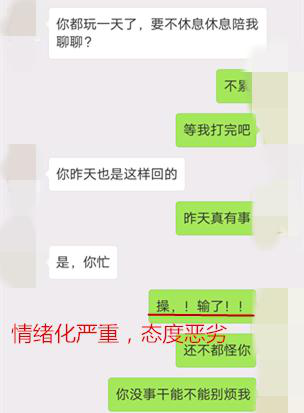
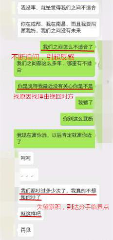
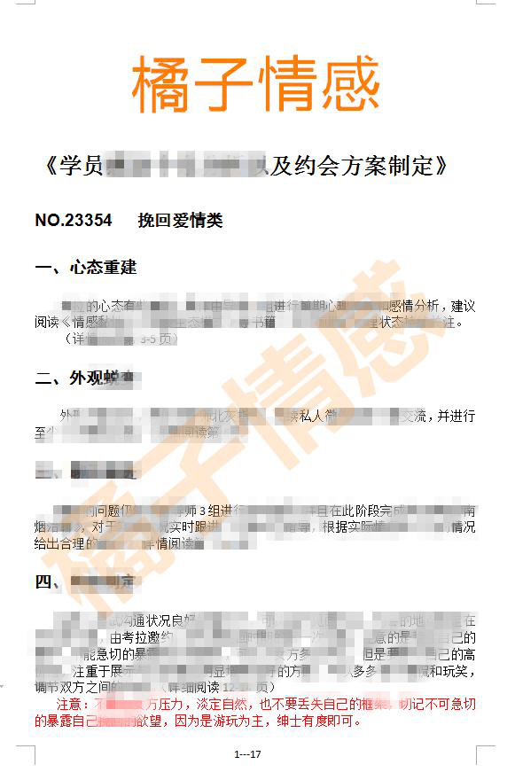

官方二维码
免费情感热线电话
4006-299-520

官方二维码
免费情感热线电话
4006-299-520

大家好，我们是橘子情感。专注情感，为爱而生。 从业八年以来，橘子情感始终秉承着“专注情感、专业服务、专心经营”的原则， 致力于为大家提供挽回爱情、挽救婚姻、 分离小三、订制爱情等两性情感服务。
我叫赵柯，她平时叫我考拉。
我们两个一起报的大学，本来是想在一个大学，但是没能如愿，所以就都报了C市的学校。开始的时候我们整天煲电话煲，但是因为大学嘛，很多时候有很多兄弟一起出去玩，而且当时有DOTA的游戏，整个宿舍经常通宵开黑，很多时候她打电话我接不到，或者我在玩游戏，也听不清她在说些什么，她跟我吵架不准我打游戏，我烦她每天都要我跟她打电话，每天哪有那么多事情要说啊。所以因为玩游戏的事我们之间吵过很多架。
考拉和妹子的相处一段时间后，认为感情稳定了，自然就放松了沟通，情感会渐渐进入疲惫期。在这个时候要更加的注意两个人之间的沟通，需要的是高效、深入的了解，而不是一味的去敷衍，这样只会使双方对感情的信任和依赖下降，所以在相处一段时间之后，一定不能松懈，疏于对情绪的管理和引导。
冷战一次之后，我就去学校找她，拿出整个周末的时间陪她，到处逛街，她也就不生气了，要求周末都要一起过，我也是同意的。回去之后电话煲就又打起来了，这样密切联系没几天我就烦了，渐渐的就不打电话了，不打电话几天就又想她了，我们两个就继续打电话，平时周末节假日两个人就一起过，就这样大概到大三吧，她会让我陪她到处玩，去很多的景区，其实我觉得都挺开心的，就是感觉很像是老夫老妻的生活，以后也一直这样下去也不错。
她平时也会经常跟我吵架，我就是觉得她太小女生了，一点都不独立，最好什么事情都要我陪着，什么都要情侣一起做，小到头像，大到其他的东西都是一对对的。当时就是一再的忍让，但是却越忍让两人之间感觉到越糟。
在一份感情中，两个人的地位应该是平等的。考拉一直在不断的对女方投资，并且自己的框架地位不断下降，致使自己的价值感不断减弱，这样会使两人的感情不断的退步。两个人在感情中是平等的，稳住自己的框架，在合适的时机要学会用合适的方式巧妙的化解两人地位的不平衡。
我们吵吵闹闹到大学毕业，中间她提起过分手，都被我解决了。但是到毕业了，我自己找了一个成都的工作，本来她是跟我一起的，但是她妈妈当时生病了，她也就回N市，但是我从来没想过，她就再也不回来了，她直接在N市找到一份工作，然后就跟我说分手了。她给我理由是我不甘上进，给不到她未来。我觉得这个理由太敷衍了，但是我们这么长时间的感情，我是绝对不能忍受就这样分开，我打过很多电话，开始她还会接电话，后来就再也不接电话了。
距离和时间对于感情本身就是一项考验，对于距离远或者时差大的感情维持是非常不易。在这个案例里，两人之间本身就有矛盾，再加上距离的原因，不去又针对性的解决关键问题的话，就会使两人的感情更加摇摇欲坠。真正的内在问题在于考拉的行为，不守承诺，两人之间的信任度会急剧降低。这是我们在感情中应该避免的。可以通过在后期挽回的行动中去证明自己的改变，增加两人之间的信任。
今年过年之后，我回N市找她，她跟我说，我们不能做恋人了，如果觉得分开太痛苦，可以做朋友。她说她受不了两个城市的远距离恋爱。我年后就回到了N市，我愿意满足她的要求，我找了一份清闲一点的工作，打算好好的挽回她。我邀请她出来吃饭，陪她出去玩，但是她都是不同意，跟我说再这样我们之间连朋友都没得做了。
我整个人都快崩溃了，我拼命的问她为什么，她就是说不适合，我们之间父母都互相见过了，就差谈婚论嫁了，但是我却再也追不回她，我没有什么胃口，不吃东西，经常去她们公司门口等她，渐渐的她就会刻意的避开我，我越发的万念俱灰，我觉得不管怎么样，只要让我能够挽回她就可以，所以我是实在没有办法了，网上搜寻时偶然看到橘子情感的文章，我就多看了一些文章，都很是比较专业的，很多问题我也都存在。
导师了解了我的详细情况后，给我一针见血的分析我的错误，并且对于女性的心理给我有了一个重点的讲解。经过一系列高端课程理论实践相结合的学习和导师们的系统跟踪指导，我终于不负众望成功挽回了他。
（由于涉及学员隐私，具体内容用马赛克遮盖，敬请见谅）
分手很痛苦，但是分手的原因很多都是我们自己或者双方都出现了或多或少的问题，既然我们对于这份感情都念念不忘，那么我们为什么不愿意为挽回这份感情迈出自己的第一步呢？
如果您有情感上的任何问题，可以咨询橘子情感的专业情感导师。橘子情感，您身边的爱情指导挽回专家。
{kind=link}